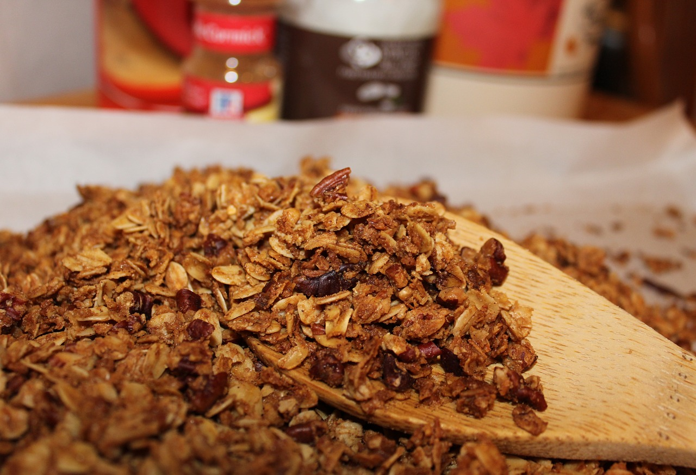

Jessies Famous Granola

This recipe is simple, requiring just 9 ingredients and roughly 30 minutes to make!
Ingredients
-
3 cups rolled oats
-
1 cup chopped raw nuts
-
2 tbsp of chia seeds
-
3 tbsp coconut or organic cane sugar
-
1 tbsp sea salt
-
1/3 cup cocoa powder
-
1/4 cup coconut oil
-
1/2 cup maple syrup
-
1/2 cup dark chocolate chips or chunks
Steps
-
Preheat oven to 340 degrees F (171 C).
-
To a food processor (or mixing bowl), add the oats, nuts, coconut, chia seeds, coconut sugar, salt, and cocoa powder. Pulse a few times (or stir) to combine.
-
In a small saucepan over medium-low heat, warm the coconut oil and maple syrup until melted and combined. Pour over the dry ingredients and mix or stir well. If using a food processor, this breaks down the oats and nuts a bit more so it’s a finer texture, but this is optional.
-
Spread the mixture evenly onto a baking sheet (or more baking sheets if making a larger batch) and bake for 17-24 minutes (or until fragrant and deep golden brown), stirring a bit near the halfway point to ensure even baking.
-
Let cool completely. Then add chocolate (optional). Place in a container that has an air-tight seal, and it should keep for a few weeks. Or store in the freezer up to 1 month or longer.
Return to Home